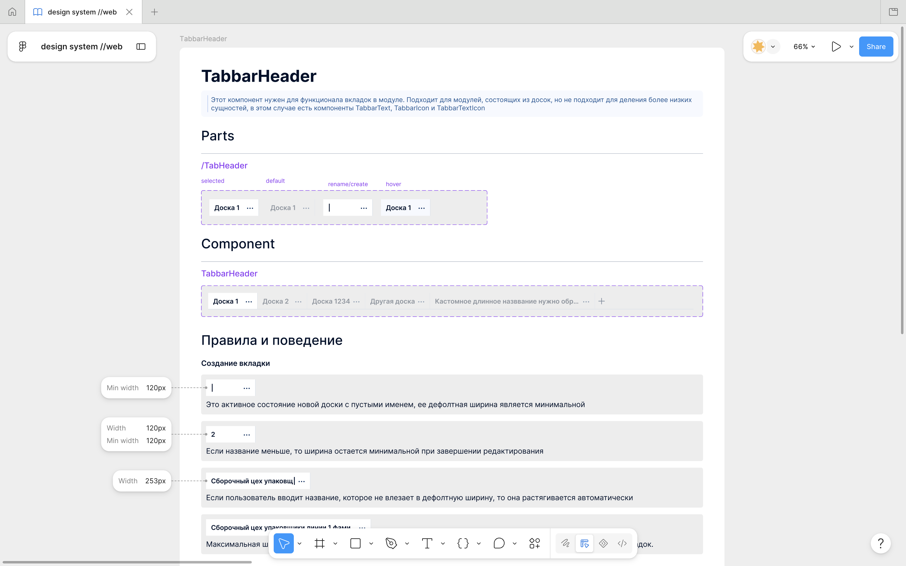
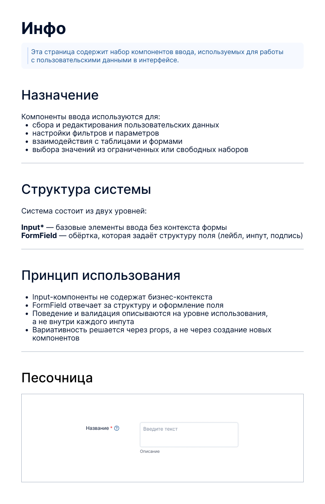
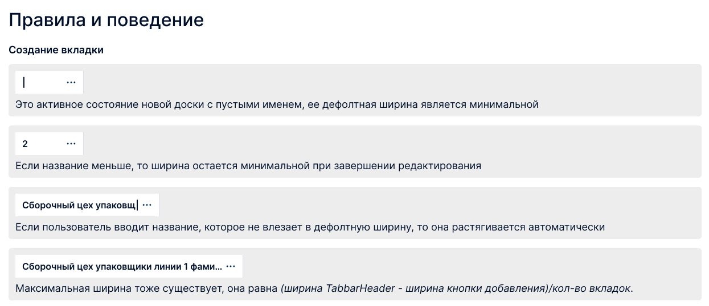
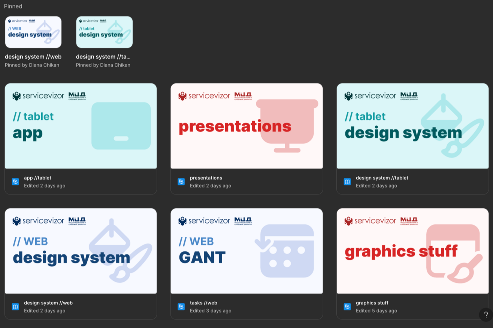
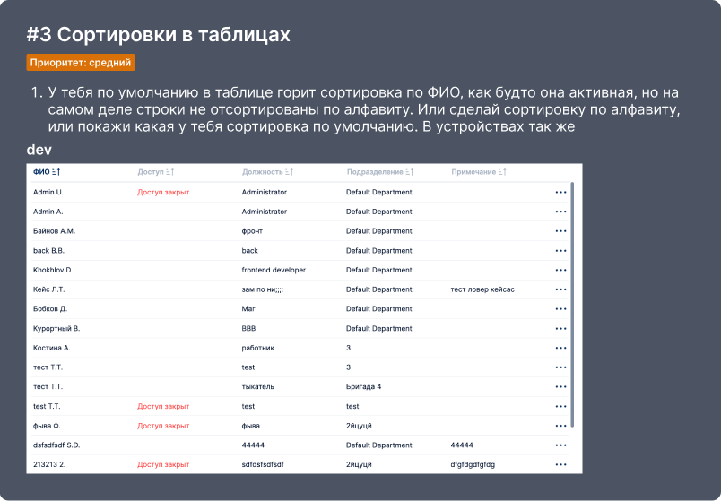

The ServiceVizor design system
Technical specialists use ServiceVizor to write instructions, schedule work and track its progress. I built a component library for these interfaces and documented how the components behave, giving design and engineering a shared reference.
My role

How the library fits together
The instruction editor, task table and Gantt chart each need a different layout. I standardised their colours, typography, spacing and corner radii. When a solution recurred across modules, I added it to the library. Tables, forms in dialogs and empty states became reusable patterns.
How an input fits inside a form
The Input components handle entering or selecting a value. FormField brings together the label, input and supporting text. Each form supplies its own context and validation. This lets the same input work in an editing form or a table filter.

Choosing a button
In ButtonBase, visual priority and the meaning of an action are independent. For example, a delete button can be red to signal a destructive action while using a secondary style. Size, icon visibility and interaction state are separate properties.

What goes into a specification
People work with multiple boards in both planning and analytics. I built TabbarHeader from individual TabHeader tabs so users could switch boards. The specification covers what happens before a board has a name and how a tab handles a long title.

When a title is truncated, hovering reveals its full text. Hovering over the menu button inside the same tab highlights the button and keeps the title tooltip hidden.
One calendar for dates and ranges
The original calendar had no manual date entry. When selecting a range, it was hard to tell which days would be included. I added manual entry and separate modes for dates and ranges. Once the start date is set, hovering previews the days in between.


I added relative shortcuts for frequently used periods. For example, “This quarter” is calculated from the current date.
Watch the original calendar
Open the recording separatelyWatch the revised calendar
Open the recording separatelyHow the team used the system
The designs originally lived in one Figma file. I split them by product module, with separate files for the web and tablet libraries. Each module also had a page for implementation reviews.

Reviewing the implementation
I added a pre-release design review stage in Jira. For each discrepancy, I recorded the priority, attached a screenshot and described the expected behaviour. In the users table, for example, the name column showed an active sort while the names were out of order. I asked the developer to make the indicator match the actual row order.
